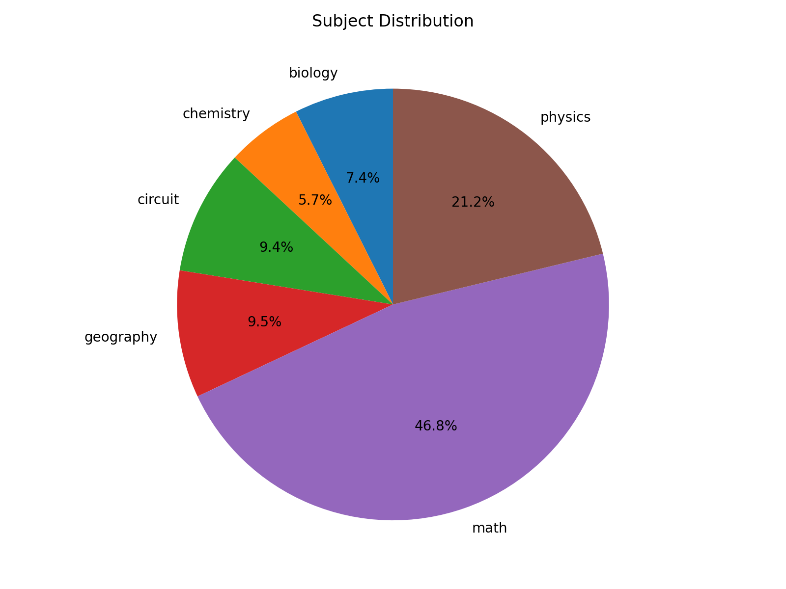
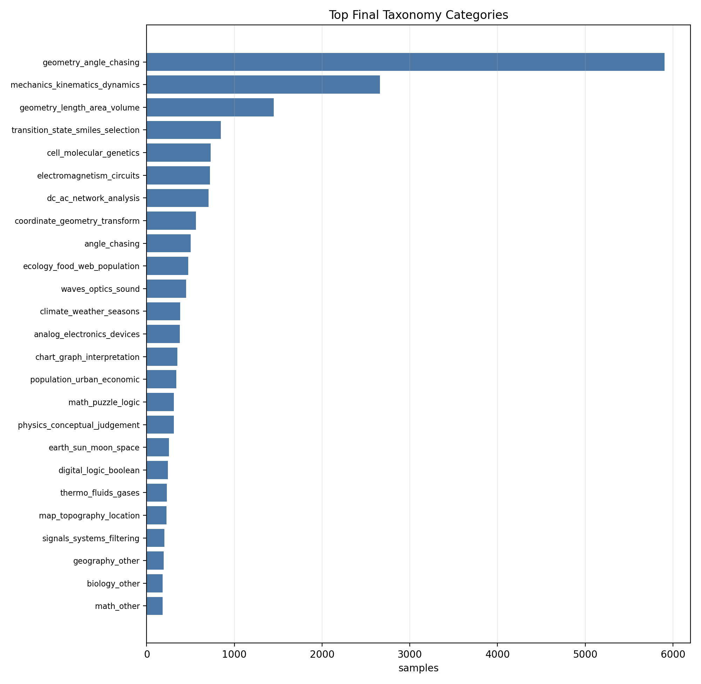

Pipeline1 到 Ready Pass：数据生产、门控与分析
本次汇报分开说明“全局 ready 资产”和“5 月 7 日以来生产子集”：前者回答最终数据规模与结构，后者回答数据如何被生产、筛选和放行。
全局 ready 资产
用于最终数据结构、领域覆盖和题型特征分析。
5 月 7 日以来生产子集
用于解释 Pipeline1 成本、outputs-to-ready 转化和 review release。
Ready Pass 数据资产结构图
最终 ready pass 资产覆盖 6 个主领域、21 个核心数据集，不是单一数学或单一物理集合；它已经具备领域覆盖、题型 taxonomy 和特征统计三层分析结构。
Ready Pass
全局 ready pass 口径


Taxonomy 与数据特征分析框架
这一步不是简单“打标签”，而是把 21 个数据集统一到可比较的题型结构和特征矩阵中，使后续能够回答：题型是否多样、哪些领域占主导、哪些数据集偏科、哪些样本复杂。
21 个 Ready 数据集
规模范围：64 - 4,229 samples；覆盖 6 个主领域
Taxonomy 分类流程
重点细分：eee_bench、geometry3k、geoqa_plus、scemqa_math、multi_physics、phyx、seephys
数据特征统计
均有中文题意
统计图
摘要
偏向分析
Pipeline1：从原始样本到结构化 outputs
生产子集显示 Pipeline1 是多节点加工流程：每个样本平均触发约 7.28 次请求，累计请求耗时约 91.95 秒。
Outputs → Ready：选择、去重与质量门控
生产子集里的 ready 不是简单复制 outputs，而是经过 pass/review/reject 判断、review release、去重和风险过滤后形成。
Review release：释放非致命工程风险，保留语义风险
review 不是默认放行；只有命中结构化 release policy 或显式候选子集的样本才进入 ready。
质量门控规则
不放行边界
实际放行分布
Ready taxonomy：14 类粗粒度题型
最终 ready 集以视觉数学、物理力学、电磁电路为主体，同时覆盖化学结构、生命科学和地理类题目。
Top taxonomy 分布
Review 原因：不只是视觉问题
review 原因是混合信号，既包含 alignment/metadata，也包含答案可解性、视觉 grounding 和改写结构问题，因此必须用细分 release policy 处理。
原因分布
reason occurrence 口径：22,643 / 20,285 / 11,594 / 9,359 / 6,699
原因解释与处理策略
| 原因 | 处理策略 |
|---|---|
| alignment / metadata | 可通过结构化规则部分释放 |
| answer / solvability | 保守 hold，防止语义错误 |
| visual grounding | 只释放低风险 grounding path 问题 |
| rewrite / structure | 需验证题干完整和答案可验 |